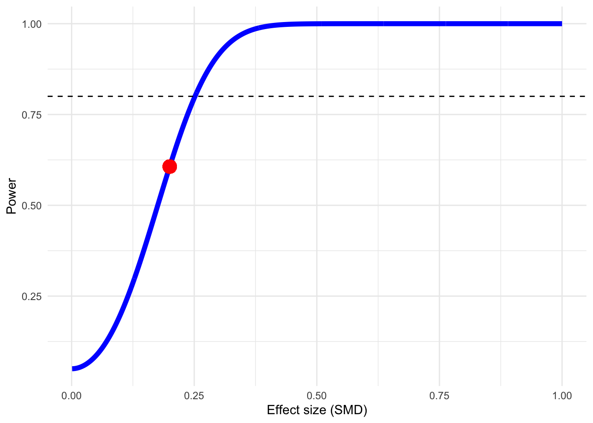

Extensive documentation for the dmetar package can be found at:
www.bookdown.org/MathiasHarrer/Doing_Meta_Analysis_in_R/
power.analysis(d =0.2, k =10, n1 =25, n2 =25, p =0.05)
Fixed-effect model used.
Warning in geom_point(aes(x = es, y = power), color = "red", size = 5): All aesthetics have length 1, but the data has 1000 rows.
ℹ Did you mean to use `annotate()`?

Power: 60.66%
14.2 Random-Effects Model
power.analysis(d =0.2, k =10, n1 =25, n2 =25, p =0.05,heterogeneity ="moderate")
Random-effects model used (moderate heterogeneity assumed).
Warning in geom_point(aes(x = es, y = power), color = "red", size = 5): All aesthetics have length 1, but the data has 1000 rows.
ℹ Did you mean to use `annotate()`?
Minimum effect size difference needed for sufficient power: 0.536 (input: 0.36)
Power for subgroup difference test (two-tailed): 46.99%
Warning in geom_point(aes(x = gamma, y = twotail), color = "red", size = 5): All aesthetics have length 1, but the data has 1000 rows.
ℹ Did you mean to use `annotate()`?